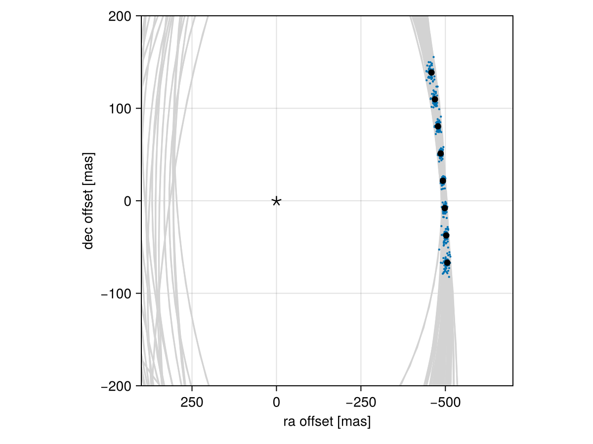

Posterior Predictive Checks
A posterior predictive check compares our true data with simulated data drawn from the posterior. This allows us to evaluate if the model is able to reproduce our observations appropriately. Samples drawn from the posterior predictive distribution should match the locations of the original data.
To demonstrate, we will fit a model to relative astrometry data:
using Octofitter
using Distributions
astrom_dat = Table(
epoch= [50000,50120,50240,50360,50480,50600,50720,50840,],
ra = [-505.764,-502.57,-498.209,-492.678,-485.977,-478.11,-469.08,-458.896,],
dec = [-66.9298,-37.4722,-7.92755,21.6356, 51.1472, 80.5359, 109.729, 138.651,],
σ_ra = fill(10.0, 8),
σ_dec = fill(10.0, 8),
cor = fill(0.0, 8)
)
astrom_obs = PlanetRelAstromObs(astrom_dat, name="simulated astrom")
planet_b = Planet(
name="b",
basis=Visual{KepOrbit},
observations=[astrom_obs],
variables=@variables begin
a ~ truncated(Normal(10, 4), lower=0.1, upper=100)
e ~ Uniform(0.0, 0.5)
i ~ Sine()
ω ~ UniformCircular()
Ω ~ UniformCircular()
θ ~ UniformCircular()
tp = θ_at_epoch_to_tperi(θ,50420; system.M, a, e, i, ω, Ω) # reference epoch for θ. Choose an MJD date near your data.
end
)
sys = System(
name="Tutoria",
companions=[planet_b],
observations=[],
variables=@variables begin
M ~ truncated(Normal(1.2, 0.1), lower=0.1)
plx ~ truncated(Normal(50.0, 0.02), lower=0.1)
end
)
model = Octofitter.LogDensityModel(sys)
using Random
Random.seed!(0)
chain = octofit(model)Chains MCMC chain (1000×28×1 Array{Float64, 3}):
Iterations = 1:1:1000
Number of chains = 1
Samples per chain = 1000
Wall duration = 3.53 seconds
Compute duration = 3.53 seconds
parameters = M, plx, b_a, b_e, b_i, b_ωx, b_ωy, b_Ωx, b_Ωy, b_θx, b_θy, b_ω, b_Ω, b_θ, b_tp
internals = n_steps, is_accept, acceptance_rate, hamiltonian_energy, hamiltonian_energy_error, max_hamiltonian_energy_error, tree_depth, numerical_error, step_size, nom_step_size, is_adapt, loglike, logpost, tree_depth, numerical_error
Use `describe(chains)` for summary statistics and quantiles.
We now have our posterior as approximated by the MCMC chain. Convert these posterior samples into orbit objects:
# Instead of creating orbit objects for all rows in the chain, just pick
# every twentieth row.
ii = 1:20:1000
orbits = Octofitter.construct_elements(model, chain, :b, ii)50-element Vector{Visual{KepOrbit{Float64}, Float64}}:
Visual{KepOrbit{Float64}, Float64}(KepOrbit(15.4, 0.441, 0.728, -2.48, 1.95, 31700.0, 1.21), 49.996133185321334, 4.1256151847290243e6)
Visual{KepOrbit{Float64}, Float64}(KepOrbit(16.5, 0.0316, 0.927, 0.843, 3.39, 48300.0, 1.16), 50.01975172529278, 4.1236671341332817e6)
Visual{KepOrbit{Float64}, Float64}(KepOrbit(11.2, 0.272, 0.516, -2.2, 2.17, 39900.0, 1.2), 49.98343274440931, 4.126663474712373e6)
Visual{KepOrbit{Float64}, Float64}(KepOrbit(13.9, 0.218, 0.745, -3.12, 0.851, 48800.0, 1.23), 49.995258665550764, 4.125687350213134e6)
Visual{KepOrbit{Float64}, Float64}(KepOrbit(11.4, 0.108, 0.688, 2.16, 0.637, 46600.0, 1.23), 49.97621635445008, 4.1272593504115827e6)
Visual{KepOrbit{Float64}, Float64}(KepOrbit(11.9, 0.0332, 0.669, -0.354, 0.603, 40500.0, 1.27), 49.99754842201154, 4.125498404563528e6)
Visual{KepOrbit{Float64}, Float64}(KepOrbit(12.4, 0.257, 0.786, 0.718, 0.0794, 40600.0, 1.3), 49.98335437478294, 4.126669944967896e6)
Visual{KepOrbit{Float64}, Float64}(KepOrbit(12.1, 0.161, 0.56, -3.12, 1.19, 49600.0, 1.24), 49.99745622988709, 4.1255060117197917e6)
Visual{KepOrbit{Float64}, Float64}(KepOrbit(13.2, 0.211, 0.74, -2.9, 3.22, 37700.0, 1.13), 49.959086679868626, 4.1286744805567525e6)
Visual{KepOrbit{Float64}, Float64}(KepOrbit(8.17, 0.222, 0.467, 3.03, 4.69, 46000.0, 1.15), 49.961325879353744, 4.1284894389148746e6)
Visual{KepOrbit{Float64}, Float64}(KepOrbit(14.6, 0.0728, 0.798, -0.633, 0.216, 34400.0, 1.18), 49.99715052226867, 4.1255312371297297e6)
Visual{KepOrbit{Float64}, Float64}(KepOrbit(12.9, 0.0904, 0.757, -2.58, 3.25, 39800.0, 1.16), 49.99372299801563, 4.1258140798052493e6)
Visual{KepOrbit{Float64}, Float64}(KepOrbit(8.79, 0.154, 0.416, -3.01, 4.29, 45100.0, 1.1), 49.980851406820456, 4.1268766025652215e6)
Visual{KepOrbit{Float64}, Float64}(KepOrbit(8.49, 0.211, 0.318, -2.85, 4.11, 45400.0, 1.18), 49.989157569996905, 4.126190883658637e6)
Visual{KepOrbit{Float64}, Float64}(KepOrbit(12.7, 0.109, 0.817, 1.83, 0.445, 44500.0, 1.21), 50.0407364519882, 4.121937862465274e6)
Visual{KepOrbit{Float64}, Float64}(KepOrbit(10.9, 0.0172, 0.566, -2.32, 0.927, 38600.0, 1.24), 49.98749876722268, 4.126327808630951e6)
Visual{KepOrbit{Float64}, Float64}(KepOrbit(14.2, 0.0395, 0.803, -1.24, 0.444, 34800.0, 1.29), 50.007127880369346, 4.124708116421681e6)
Visual{KepOrbit{Float64}, Float64}(KepOrbit(14.8, 0.422, 0.693, -2.73, 2.69, 32900.0, 1.08), 50.01447406259818, 4.1241022746522347e6)
Visual{KepOrbit{Float64}, Float64}(KepOrbit(11.1, 0.0998, 0.504, 2.44, 3.72, 39300.0, 0.991), 50.0079602696327, 4.1246394600971267e6)
⋮
Visual{KepOrbit{Float64}, Float64}(KepOrbit(11.3, 0.122, 0.691, -2.68, 1.35, 38000.0, 1.23), 50.03279525663558, 4.1225920956263295e6)
Visual{KepOrbit{Float64}, Float64}(KepOrbit(12.1, 0.188, 0.783, 0.935, 0.0698, 41900.0, 1.36), 49.98404811244344, 4.1266126701680073e6)
Visual{KepOrbit{Float64}, Float64}(KepOrbit(13.6, 0.245, 0.799, 2.83, 0.96, 48500.0, 1.28), 50.023049708407015, 4.123395263772391e6)
Visual{KepOrbit{Float64}, Float64}(KepOrbit(10.2, 0.0261, 0.639, -0.096, 4.55, 49800.0, 1.29), 50.03004176009014, 4.1228189901619763e6)
Visual{KepOrbit{Float64}, Float64}(KepOrbit(14.1, 0.132, 0.734, 0.48, 3.72, 49000.0, 1.26), 49.98243734687594, 4.126745656992026e6)
Visual{KepOrbit{Float64}, Float64}(KepOrbit(13.9, 0.474, 0.791, 0.695, 6.0, 36500.0, 1.31), 49.98574200474287, 4.126472829542573e6)
Visual{KepOrbit{Float64}, Float64}(KepOrbit(10.9, 0.0571, 0.6, 0.098, 4.33, 49600.0, 1.1), 49.98558045440534, 4.1264861660502697e6)
Visual{KepOrbit{Float64}, Float64}(KepOrbit(11.7, 0.108, 0.699, -2.73, 3.53, 41600.0, 1.25), 49.98422008008305, 4.1265984728105348e6)
Visual{KepOrbit{Float64}, Float64}(KepOrbit(10.9, 0.0595, 0.621, -2.98, 1.23, 49800.0, 1.17), 49.9655116088603, 4.1281435855551166e6)
Visual{KepOrbit{Float64}, Float64}(KepOrbit(16.2, 0.215, 0.874, -0.128, 0.204, 32900.0, 1.25), 49.99311809639331, 4.1258640009088987e6)
Visual{KepOrbit{Float64}, Float64}(KepOrbit(9.76, 0.122, 0.414, 0.677, 0.335, 43800.0, 1.13), 50.01650197358217, 4.1239350635924474e6)
Visual{KepOrbit{Float64}, Float64}(KepOrbit(12.2, 0.29, 0.885, 2.24, 1.36, 48700.0, 1.32), 50.02263489118012, 4.123429457400784e6)
Visual{KepOrbit{Float64}, Float64}(KepOrbit(17.0, 0.235, 0.833, -0.485, 0.0928, 30600.0, 1.31), 50.01299685378642, 4.124224086193314e6)
Visual{KepOrbit{Float64}, Float64}(KepOrbit(9.06, 0.16, 0.429, 2.89, 4.4, 44600.0, 1.21), 50.031616847491584, 4.122689196230479e6)
Visual{KepOrbit{Float64}, Float64}(KepOrbit(11.5, 0.263, 0.794, 0.942, 0.228, 42300.0, 1.22), 49.99256059699452, 4.1259100110886637e6)
Visual{KepOrbit{Float64}, Float64}(KepOrbit(10.1, 0.128, 0.598, -1.93, 3.8, 45300.0, 1.19), 49.96860482896561, 4.1278880399624356e6)
Visual{KepOrbit{Float64}, Float64}(KepOrbit(10.5, 0.0131, 0.429, 1.99, 3.79, 40400.0, 1.13), 50.04601600946265, 4.1215030225002533e6)
Visual{KepOrbit{Float64}, Float64}(KepOrbit(10.1, 0.285, 0.625, -2.33, 3.4, 43300.0, 1.19), 49.980432802129855, 4.1269111666897503e6)
Visual{KepOrbit{Float64}, Float64}(KepOrbit(10.6, 0.232, 0.538, 0.642, 0.000202, 41700.0, 1.07), 50.01119265495548, 4.1243728712928044e6)Calculate and plot the location the planet would be at each observation epoch:
using CairoMakie
epochs = astrom_obs.table.epoch' # transpose
x = raoff.(orbits, epochs)[:]
y = decoff.(orbits, epochs)[:]
fig = Figure()
ax = Axis(
fig[1,1], xlabel="ra offset [mas]", ylabel="dec offset [mas]",
xreversed=true,
aspect=1
)
for orbit in orbits
Makie.lines!(ax, orbit, color=:lightgrey)
end
Makie.scatter!(
ax,
x, y,
markersize=3,
)
fig
Makie.scatter!(ax, astrom_obs.table.ra, astrom_obs.table.dec,color=:black, label="observed")
Makie.scatter!(ax, [0],[0], marker='⋆', color=:black, markersize=20,label="")
Makie.xlims!(400,-700)
Makie.ylims!(-200,200)
fig
Looks like a great match to the data! Notice how the uncertainty around the middle point is lower than the ends. That's because the orbit's posterior location at that epoch is also constrained by the surrounding data points. We can know the location of the planet in hindsight better than we could measure it!
You can follow this same procedure for any kind of data modelled with Octofitter.